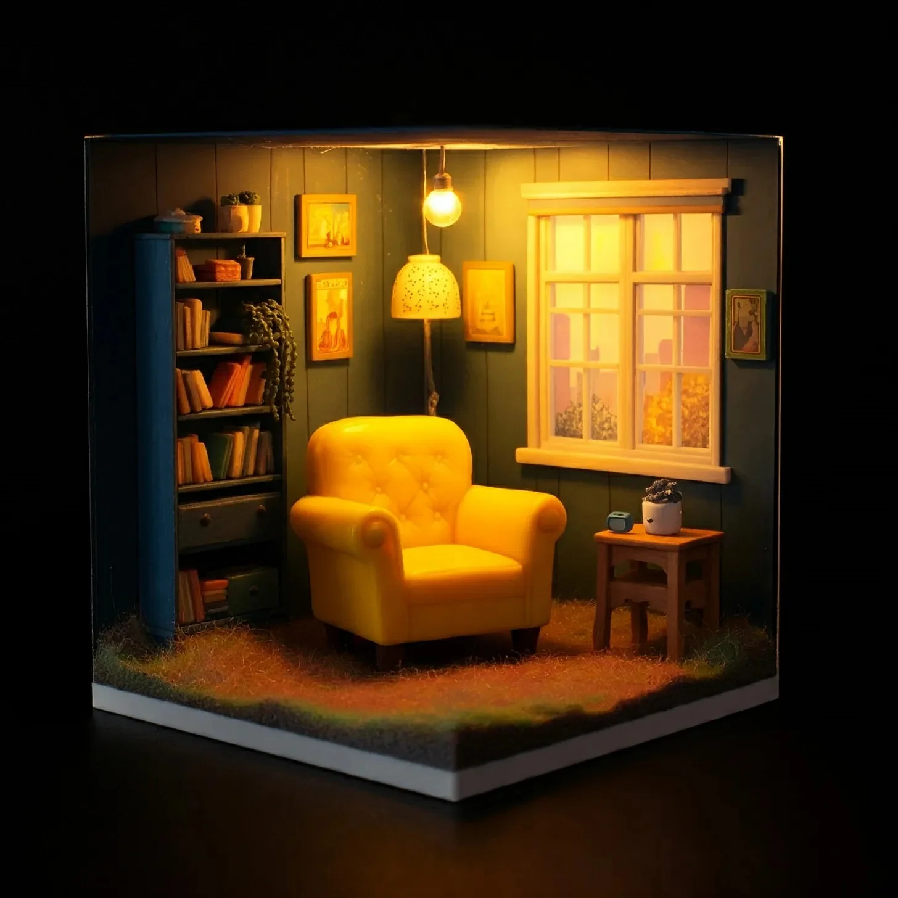

인간의 가장 친한 친구와 인간의 가장 편안한 자리 사이의 싸움에서는 승자가 있을 수 없었습니다. 저는 문간에 서서 손가락 끝에 열쇠를 매달고 있었고, 물 밖으로 나온 물고기처럼 입을 벌리고 있었습니다. 제 앞에 펼쳐진 광경은 마치 잭슨 폴록의 파괴적인 작품 같았습니다 - 만약 폴록이 오로지 노란색과 개의 침으로만 작업했다면 말이죠.
[In the battle between man’s best friend and man’s comfiest seat, there could be no winners. I stood in the doorway, keys still dangling from my fingertips, mouth agape like a fish out of water. The scene before me was a fucking Jackson Pollock of destruction – if Pollock had worked exclusively in shades of yellow and dog drool.]
제가 사랑하는 의자, 수많은 넷플릭스 몰아보기와 숙취 회복을 함께 해준 충실한 동반자였던 겨자색 괴물은 산산조각이 나 있었습니다. 그 속에 들어있던 솜은 마치 도살된 양의 내장처럼 나무 바닥 전체에 흩뿌려져 있었고, 벽 아래쪽에는 솜뭉치들이 쌓여 있었습니다. 그리고 그 천 조각들의 한가운데에는 볼더 - 제 사랑스럽지만 분명 정신병적인 세인트 버나드가 앉아 있었습니다.
[My beloved chair, a mustard-hued monstrosity that had been my faithful companion through countless Netflix binges and hangover recoveries, lay eviscerated. Its stuffing spewed across the hardwood floor like the innards of a butchered sheep, forming cottony drifts against the baseboards. And there, in the midst of this fabric carnage, sat Boulder – my lovable, yet clearly psychopathic, Saint Bernard.]
“이 털복숭이 자식아,” 저는 중얼거리며 한때 제 거실이었던 곳의 폭격 중심지로 발을 들여놓았습니다. 볼더의 꼬리가 바닥을 치며, 흔들릴 때마다 혼돈을 더 퍼뜨리고 있었습니다. 평소에도 인상적으로 축 처진 그의 입가는 어떻게든 더 축 처져 보였고, 노란 솜뭉치들로 무거워져 있었습니다.
[“You furry bastard,” I muttered, stepping into ground zero of what used to be my living room. Boulder’s tail thumped against the floor, spreading the chaos further with each wag. His jowls, usually impressively droopy, were somehow even more pendulous, weighed down by tufts of yellow fluff.]
저는 무릎을 꿇고 찢어진 의자 천 조각을 부둥켜안았습니다. “우리는 특별한 사이였어,” 저는 의자의 잔해에 속삭였습니다. 제 마음은 그 의자를 발견했던 날로 되돌아갔습니다. 그날 중고품 가게에서 보석 같은 의자를 발견했죠.
[I sank to my knees, cradling a piece of torn upholstery. “We had something special, you and I,” I whispered to the chair remnant. My mind drifted back to the day I’d found it, a diamond in the rough at a second-hand store.]
비가 오고 있었습니다. 당연히 그랬겠죠. 저는 폭우를 피해 가게로 뛰어들어갔고, 개처럼 머리에서 물을 털어냈습니다 - 지금 상황을 고려하면 아이러니하네요. 그리고 거기에 그 의자가 있었습니다. 다리가 셋인 커피 테이블과 발정난 문어가 디자인한 것 같은 램프 사이에 끼어 있었죠.
[It had been raining, because of-fucking-course it had. I’d ducked into the shop to escape the deluge, shaking water from my hair like a dog – ironic, considering the current situation. And there it was, tucked between a three-legged coffee table and a lamp that looked like it had been designed by a horny octopus.]
의자의 노란 천은 먼지 쌓인 가게에서 희망의 등대처럼 빛나고 있었습니다. 저는 조심스럽게 다가갔습니다. 이미 누군가의 것일지도 모른다는 생각에 말이죠. 하지만 아니었습니다. 이 햇살 빛깔의 아름다운 의자는 저만을 기다리고 있었던 겁니다. 저는 그 의자에 푹 빠져들었고, 마치 버터로 만든 구름이 저를 안아주는 것 같았습니다 - 부드럽고, 포근하고, 가장 좋은 의미에서 약간 기름진 느낌이었죠.
[The chair’s yellow fabric gleamed like a beacon of hope in the dusty shop. I’d approached it cautiously, half-expecting it to be claimed already. But no, this sunshine-hued beauty was waiting just for me. I’d sunk into its embrace, and it was like being hugged by a cloud made of butter – soft, enveloping, and slightly greasy in the best possible way.]
“얼마예요?” 저는 가게 주인에게 물었습니다. 목소리에서 절박함이 드러나지 않도록 노력하면서 말이죠.
[“How much?” I’d asked the shopkeeper, trying to keep the desperate edge out of my voice.]
그가 말한 가격은 제 지갑을 울게 만들었지만, 저는 신경 쓰지 않았습니다. 이 의자와 저는 운명적으로 함께하기로 되어 있었던 거죠. 저는 망설임 없이 신용카드를 한도까지 긁었고, 배송을 예약했으며, 그 다음 주 내내 라면만 먹으면서 제 새로운 왕좌를 꿈꿨습니다.
[He’d named a price that made my wallet weep, but I didn’t care. This chair and I were destined to be together. I’d maxed out my credit card without a second thought, arranged for delivery, and spent the next week eating ramen and dreaming of my new throne.]
몇 달 동안 그 의자는 제게 전부였습니다. 저는 퇴근하자마자 집으로 달려갔고, 친구들의 외출 초대 문자도 무시했습니다. “미안, 못 갈 것 같아. 의자랑 약속 있어,"라고 대답했죠. 그럴듯한 변명을 만들어낼 생각조차 하지 않았습니다.
[For months, that chair was my everything. I’d race home from work, ignoring texts from friends inviting me out. "Sorry, can’t make it. Got plans with my chair,” I’d reply, not even bothering to come up with a believable excuse.]
저는 그 푹신한 의자에 몸을 묻고, 뜨거운 보도블록 위의 아이스크림처럼 하루의 스트레스가 녹아내리는 것을 느꼈습니다. 우리는 함께 여러 시즌의 드라마를 봤고, 수많은 맥주를 나눴으며, 특히 끔찍했던 이별 때는 의자가 제 상담사 역할도 해줬죠. “적어도 넌 날 떠나지 않을 거야,"라고 저는 그 포근한 팔에 안겨 흐느끼며 말했고, 깨끗한 천에 콧물과 눈물을 묻혔습니다.
[I’d sink into its cushy embrace, feeling the day’s stress melt away like ice cream on a hot sidewalk. We watched entire seasons of shows together, shared countless beers, and it even played therapist during a particularly nasty breakup. "At least you’ll never leave me,” I’d sobbed into its welcoming arms, smearing snot and tears across its pristine fabric.]
하지만 그때 볼더가 나타났습니다.
저는 개를 키울 계획이 없었습니다. 하지만 언니가 전화해서 다급한 목소리로 친구의 세인트 버나드가 당장 집이 필요하다고 횡설수설할 때, 저는 생각 없이 동의했습니다. “몇 주만 돌봐주면 돼,” 언니는 약속했죠.
[But then came Boulder.
I hadn’t planned on getting a dog. But when my sister called, panic in her voice, babbling about her friend’s Saint Bernard needing a home ASAP, I’d agreed without thinking. “It’ll just be for a few weeks,” she’d promised.]
그래요, 맞아요. 마치 누군가가 볼더의 매력을 오래 거부할 수 있기라도 한 것처럼 말이죠.
그는 털복숭이 화물 열차처럼 우악스럽게 제 삶에 들어왔습니다. 온통 발바닥과 침, 그리고 무조건적인 사랑이었죠. 한때 제 변함없는 동반자였던 의자는 금세 제 애정의 2순위로 밀려났습니다. 볼더와 저는 모험을 떠났고, 식사를 함께 했으며(종종 제 의도와는 상관없이), 폭풍우 치는 밤에는 함께 몸을 맞대고 잤습니다.
[Yeah, right. As if anyone could resist Boulder’s charms for long.
He’d lumbered into my life like a furry freight train, all paws and slobber and unconditional love. The chair, my once-constant companion, was quickly relegated to second place in my affections. Boulder and I went on adventures, shared meals (often unintentionally on my part), and cuddled through stormy nights.]
하지만 의자는 여전히 우리 삶에 굳건히 자리 잡고 있었습니다. 오늘까지는 말이죠.
이제 제 옛 사랑의 잔해 앞에 무릎을 꿇고 앉아, 저는 마음이 찢어지는 것 같았습니다. 볼더가 젖은 코로 제 손을 툭툭 쳤고, 그의 눈에는 후회의 기색이 가득했습니다 - 아니면 그저 간식을 바라고 있었는지도 모르겠네요. 저는 이 모든 상황의 터무니없음에 웃음을 참을 수 없었습니다.
[But the chair remained, a steadfast presence in our lives. Until today.
Now, kneeling in the wreckage of my former love, I felt torn. Boulder nudged my hand with his wet nose, eyes full of remorse – or maybe just hoping for a treat. I couldn’t help but laugh at the absurdity of it all.]
“네가 귀여워서 다행이야, 이 파괴적인 녀석아,” 저는 그에게 말하며 귀 뒤를 긁어주었습니다. 그의 꼬리가 속도를 내더니 기쁨의 털복숭이 풍차가 되었습니다.
[“You’re lucky you’re cute, you destructive beast,” I told him, scratching behind his ears. His tail picked up speed, becoming a furry windmill of joy.]
제가 더 큰 솜뭉치들을 모으기 시작하자, 손에 의자 프레임 안에 숨겨진 단단한 물체가 닿았습니다. 호기심에 저는 더 깊이 파고들어 작고 화려한 상자를 꺼냈습니다.
[As I began gathering the larger chunks of stuffing, my hand brushed against something hard hidden within the chair’s frame. Curious, I dug deeper, pulling out a small, ornate box.]
“이게 뭐지?” 저는 중얼거리며 그것을 손에 들고 이리저리 돌려보았습니다. 그것은 오래된 것이었고, 금속은 변색되어 있었으며, 복잡한 무늬는 오랜 세월의 때 아래로 거의 보이지 않았습니다. 떨리는 손가락으로 저는 그것을 열었습니다.
[“What the hell?” I muttered, turning it over in my hands. It was old, the metal tarnished and intricate designs barely visible beneath years of grime. With trembling fingers, I opened it.]
안에는 바랜 리본으로 묶인 누렇게 변색된 편지 뭉치가 들어있었습니다. 맨 위의 봉투에는 이름이 적혀 있었는데, 제 이름이 아닌 의자의 이전 주인의 이름이었습니다.
[Inside lay a stack of yellowed letters, bound with a faded ribbon. The top envelope bore a name – not mine, but one I recognized from the chair’s previous owner.]
저는 뒤로 물러나 앉았고, 볼더의 따뜻한 몸이 제 옆구리에 바짝 붙어왔습니다. 저는 편지를 읽기 시작했습니다. 그 편지들은 사랑과 상실, 그리고 노란 의자의 심장부에 숨겨진 비밀들에 대한 이야기를 들려주었습니다. 마지막 편지를 다 읽을 때쯤, 제 뺨에는 눈물이 흘러내리고 있었고 볼더의 머리가 제 무릎에 무겁게 얹혀 있었습니다.
[I sat back on my heels, Boulder’s warm bulk pressing against my side, and began to read. The letters told a story of love, loss, and secrets hidden away in the heart of a yellow chair. By the time I finished the last one, tears streaked my cheeks and Boulder’s head rested heavily in my lap.]
“음, 친구야,” 저는 감정에 북받친 목소리로 말했습니다. “때로는 정말 중요한 것을 발견하기 위해 뭔가를 파괴해야 할 때도 있나 봐.”
[“Well, buddy,” I said, voice thick with emotion, “I guess sometimes you have to destroy something to discover what’s really important.”]
볼더의 반응은 특히 즙이 많은 트림이었고, 이어서 그의 입에서 작은 노란색 천 조각이 날아오르자 걱정스러운 표정을 지었습니다.
[Boulder’s response was a particularly juicy belch, followed by a concerned look as a small piece of yellow fabric fluttered from his mouth.]
저는 웃음을 참을 수 없었습니다. 의자는 사라졌지만, 그 자리에 제게는 풀어야 할 미스터리와, (파괴적인 성향에도 불구하고) 저를 사랑하는 개, 그리고 인생에서 가장 소중한 보물들이 종종 예상치 못한 포장으로 온다는 것을 상기시켜 주는 것들이 있었습니다.
[I couldn’t help but laugh. The chair was gone, but in its place, I had a mystery to solve, a dog who loved me (despite his destructive tendencies), and a reminder that life’s most precious treasures often come in unexpected packages.]
“자, 가자, 이 덩치야,” 저는 일어서며 말했습니다. “산책하러 가자. 그리고 돌아오는 길에 가구점에 들르는 것도 좋겠어. 이번에는 가죽으로 된 걸로 생각 중이야 - 누군가가 찢어버리기에는 훨씬 더 어려울 거야.”
[“Come on, you big oaf,” I said, standing up. “Let’s go for a walk. And maybe stop by the furniture store on the way back. I’m thinking something in leather this time – much harder for certain someones to tear apart.”]
볼더의 꼬리가 열정적으로 흔들리며 또 다른 솜뭉치 구름을 공중으로 날렸습니다. 우리가 밖으로 나가면서, 저는 사랑하던 의자의 잔해를 마지막으로 한 번 더 바라보았습니다.
[Boulder’s tail wagged enthusiastically, sending another cloud of stuffing into the air. As we headed out, I cast one last glance at the remains of my beloved chair.]
“모든 것에 감사해, 오랜 친구야,” 저는 중얼거렸습니다. “넌 정말 비밀을 간직하는 방법을 알았어 - 그리고 화려하게 퇴장하는 법도 말이야.”
[“Thanks for everything, old friend,” I murmured. “You really knew how to keep your secrets – and how to go out with a bang.”]
그렇게 볼더와 저는 햇살 속으로 걸어 나갔습니다. 우리를 기다리고 있을 어떤 모험과 가구들에 대해서도 준비가 되어 있었죠.
[With that, Boulder and I stepped out into the sunshine, ready for whatever adventures – and furniture – awaited us next.]